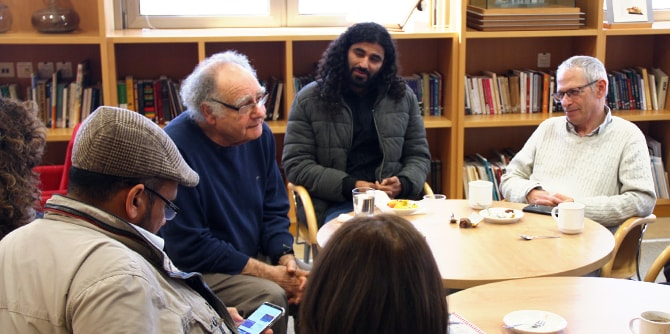

המפגש נפתח במעגלי שיח ובהם דנו המשתתפים בשאלה "מהי תרבות נגב", כבסיס להעמקה בחשיבה על פיתוח מנהיגות מקומית הפועלת בתחומי התרבות והאמנות לשיפור איכות החיים בנגב. נושא הגג המקשר בין מפגשי הפורום השנה הוא צל ומדבר.
בהמשך התכנסה הקבוצה למפגש עם הפסל
מיכה אולמן, חתן פרס ישראל לפיסול לשנת תשס"ט, שהרצה על אלמנטים של השתקפות וצל בפיסול ובאמנות, תוך התמקדות באלמנטים הפיזיים של הצל ודימוייו כביטוי אנושי פנימי. דרך התבוננות בתצלומי עבודותיו המוצגות בארץ ובעולם – מיצבים ו"בורות" המשקפים מורכבויות היסטוריות וחברתיות – שיתף אולמן את הנוכחים בשפה הייחודית של יצירתו. אולמן הציג את תפיסתו הרוחנית-תרבותית הרואה בצל גשר המחבר את האדם לסביבתו וממזג אותו עמה.

עם תום ההרצאה שבו המשתתפים למעגלי שיח וחשבו יחד על המשמעויות הנשקפות ביצירה בזיקה לאמנות הנטועה במדבר. הבנתו של אולמן, שהצל מאפשר הסתכלות על הדברים דרך בבואתם, היוותה השראה לדיאלוג פתוח על זהות נגב ועל תרבות-סְפָר.
סדרת המפגשים, בהובלתן של
ד"ר רות קלדרון, חברת סגל אורחת וד"ר עדי ניר שגיא, מנהלת מרכז מנדל למנהיגות בנגב, היא פורום של מנהיגים ודמויות מפתח מאזור הנגב המתכנס ללימוד ולהשראה על תרבות ויצירה מקומית. למפגש הגיעו דמויות מפתח מובילות מהנגב הפועלות ברשויות המקומיות, באקדמיה, במוסדות ציבור ובגופי תרבות בתחומי היצירה והאמנות המקומית.
{kind=link}